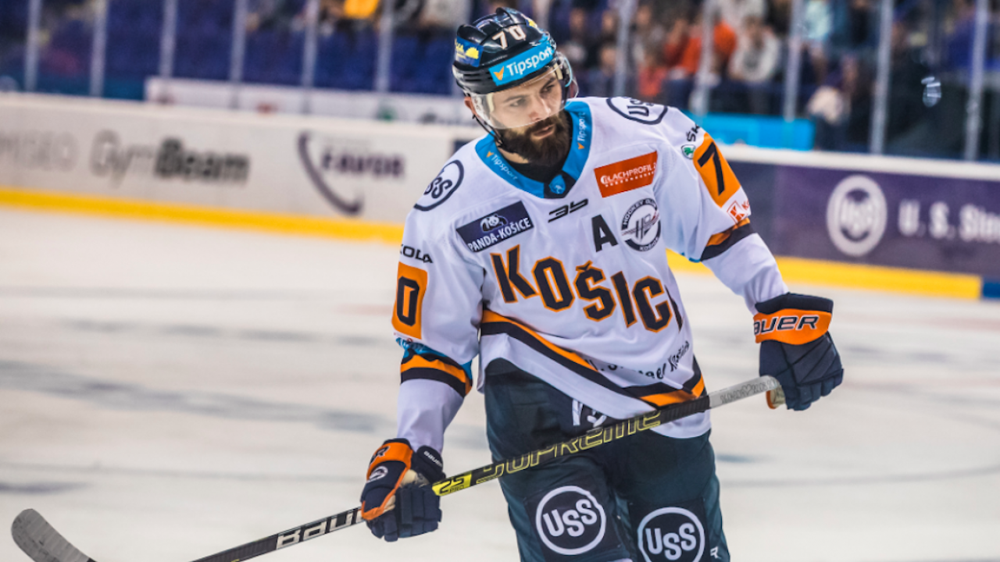
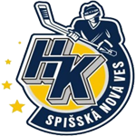
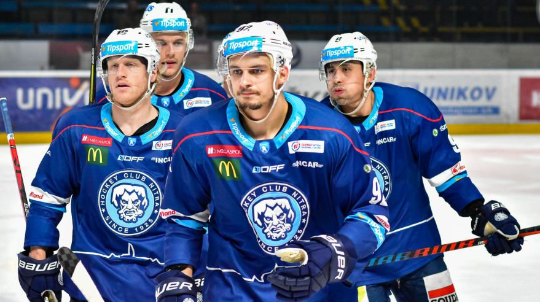

News
Ďalší víkend za nami. Pýtame sa, kde je forma Košíc?📢
Tento víkend bol bohatý na góly. V 5.kole padlo 48 gólov čo bolo doposiaľ najviac gólov a hneď na druhý deň v 6. kole padlo ešte o 7 gólov viac (55) z toho len Skalica si pripísala na svoj účet 13 gólov. Veľmi plodný víkend pre zverencov zo Záhoria. Avšak nepekný pohľad sa nám poskytuje na oceliarov, ktorý sa trápia a aktuálne bojujú v strede tabuľky o udržanie sa v play-off. Bol to len ťažký žreb na začiatku alebo sa HC bude dlhodobo trápiť? Toto rozhodne nie je forma, na ktorú sme od Košíc zvyknutý
| Hviezda kola | Meno | Bilancia | Kolo |
|---|---|---|---|
| Fritz Stahel | 0+4 | 1. | |
| Hvedar Olsa | 3+0 | 2. | |
|  | Ján Galis | 3+1 | 3. |
| Egon Sopík | 3+0 | 4. | |
| Muli Ziglin | 3+1 | 5. |

News
Nitra napravila svoju reputáciu📢